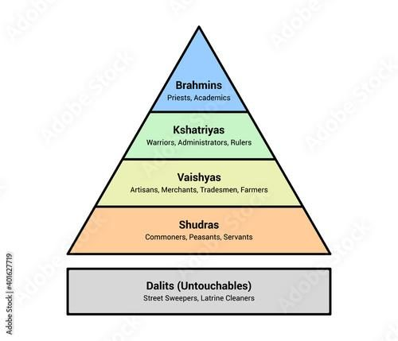
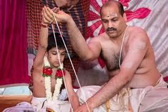
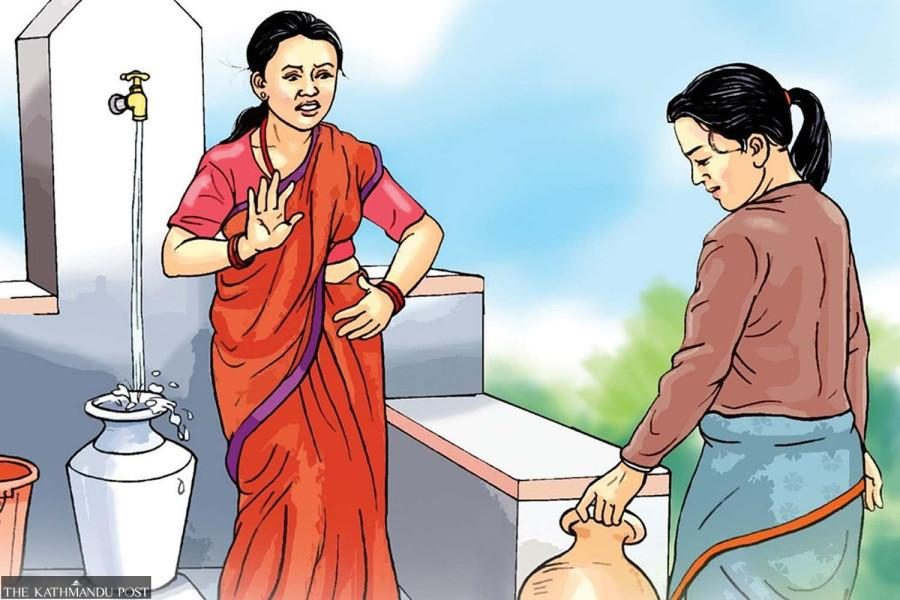
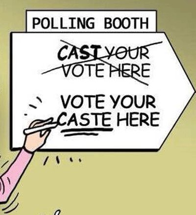
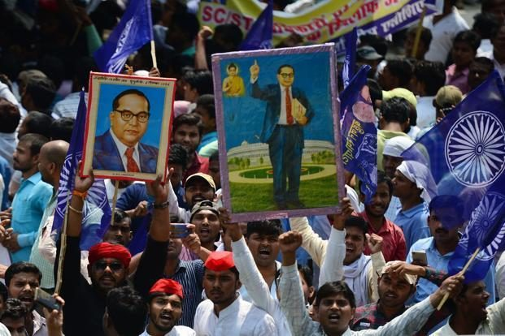
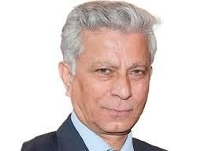

Caste System, Untouchability and Dalit MovementsHigh priority
Build every caste answer from a theorist's table, then close with Ambedkar versus Gandhi for the Dalit question.
Chapter map#
- Caste system
Features
- Ascribed status
- Endogamy
- Hierarchy
- Occupation
Theories
- Ghurye
- Dumont
- Srinivas
- Beteille
- Gupta
Concepts
- Sanskritisation
- Dominant caste
- Harmonic and disharmonic
Untouchability
- Three types (Ambedkar)
- Article 17
- Modern forms
Dalit movement
- Gandhian
- Ambedkarite
- BSP and Panthers
Exam lens#
The story first#
In simple words#
- Caste = hereditary, endogamous, ranked groups with ascribed status and no mobility.
- Ghurye: six features; Dumont: pure versus impure ideology; Srinivas: Sanskritisation, dominant caste; Beteille: class and power are changing it; Gupta: discrete castes, muddled hierarchies.
- Gandhi wanted a change of heart within Hinduism; Ambedkar wanted annihilation of caste and rejected Varna.
| Term | In plain words |
|---|---|
| Ascribed status | Position fixed at birth in caste society. |
| Endogamy | Marriage within the caste; Ambedkar calls it the core mechanism of caste. |
| Anuloma and pratiloma | Hypergamous unions (tolerated) versus hypogamous unions (condemned). |
| Roti and beti vyavahar | Rules of food sharing and marital ties. |
| Sanskritisation | Lower caste or tribe adopting rituals, customs and language of higher castes. |
| Dominant caste | Numerically strong, wealthy and politically powerful caste of a locality. |
| Homo Hierarchicus | Dumont's Indian type: holism and hierarchy; the West is Homo Aequalis. |
| Hridaya Parivartan | Gandhi's change of heart among upper castes. |
| Discrete castes | Gupta: castes exist as separate units, each with its own rituals and deities. |
1 · Caste System#
- Caste is a system of social stratification widely regarded as a distinctive feature of Indian society.
- The termcasteis derived from the Portuguese wordcasta, meaning lineage, which in turn originates from the Latin wordcastus, meaning pure.
- The caste system organizes society into hereditary, endogamous, and hierarchically ranked groups with specific social and ritual statuses.
- Various scholars have defined caste in different ways.
- According to Andre Beteille, “Caste is a small and named group of persons characterised by hereditary membership, endogamy, and a specific style of life.
- Its lifestyle includes pursuit by tradition of a particular occupation, and it is usually associated with a distinct ritual status in a hierarchical system.” The noted sociologist S.C. Dube says that “Jati is an endogamous unit, with a more or less defined ritual status, and some occupation traditionally linked to it.” While scholarly definitions may vary, some of the main features of the caste system are outlined below.
2 · Features of the Caste System#


- 1. Ascribed Status: In caste society, an individual’s position is determined by and at birth.
- 2. Prohibition on Mobility: A member of caste society is not permitted to change his caste.
- Every person is born in a particular caste and spends his entire life as a member of that caste.
- The caste society strictly prohibits and provides no mechanism to acquire a new caste.
- 3. Occupational Specification: Each caste is traditionally associated with a specific occupation.
- Every member of that caste performs the same caste occupation.
- The skills required to perform the caste occupation are passed down hereditarily from one generation to the next.
- 4. Endogamy: Every person must marry another person of the same caste.
- Despite the injunction of endogamy, inter-caste marriages did take place historically In such cases, Anuloma (hypergamous) unions were relatively tolerated, whereas Pratiloma (hypogamous) marriages were strongly condemned and punished.
- 5. Hierarchy: In every part of the country, castes are arranged hierarchically.
- No two castes are equal. In every region, there is a highest caste, a lowest caste, and several castes between them, each of which is one above and one below another caste.
- This hierarchy is based on ritual purity and pollution, with some castes considered superior and others inferior.
- 6. Restrictions on Feeding and Social Intercourse: Social interactions are governed by strict rules related to food sharing (Roti Vyavahar) and marital ties (Beti Vyavahar).
- Violations invited sanctions such as social boycott or other punishments.
- 7. Civil and Religious Disabilities and Privileges: Different castes are accorded unequal access to social, economic, and religious rights , with lower castes often facing restrictions and higher castes enjoying privileges.
3 · Caste: a closed system of stratification#
- The caste system represents a closed, hierarchical, and hereditary form of social stratification, regulating not only social status but also occupation, marriage, and everyday interactions.
- Its rigidity and all-encompassing nature historically ensured social order, but also institutionalized inequality and exclusion within Indian society.
4 · Mobility in Caste Society#
- Conventionally, caste society is considered a classic example of a closed social system.
- According to its critics, in the caste system, one’s social position is birth-based.
- Moreover, the identity acquired at birth persists throughout life.
- Caste society provides no avenues or chances for mobility.
- Therefore, the caste system is described as closed, inflexible, restrictive, rigid, and stagnant.
- Caste system is often contrasted with the class-based stratification system in Western societies, which are seen as open, with institutionalized avenues for social mobility.
- However,no social system is entirely closed and none is fully open.
- Even in Western class societies, access to opportunities is restricted based on one’s race, gender, and ethnicity.
- Sexual minorities, immigrants, the disabled, and the elderly continue to face systemic barriers to mobility in the west.
- Equally, the caste system is far from being completely closed.
- Social mobility is not only prevalent in Indian caste society in modern times, but has also been historically present.
- Some of the avenues for social mobility in caste society are as follows:
- 1. Acquisition of Political Power: A caste or community that gained political dominance could elevate its position in the social hierarchy.
- According to historian K. M. Panikkar, the Nandas were the last ‘true’ Kshatriyas.
- Since then, every known royal family has come from a non-Kshatriya caste.
- According to Romila Thapar, even the Nandas were of lower-caste origin.
- Prominent non-Kshatriya origin ruling dynasties in Indian history include Mauryan empire in Magadha (Bihar), Maharaja Agrasen’s kingdom in Agroha (Haryana), the Jat kingdom of Bharatpur, Pasi chieftains in UP, Paraya chiefs in Kerala, and Nadar rulers in Tamil Nadu.
- Prominent communities with strong martial traditions like the Rajputs of Rajasthan and Marathas in Maharashtra also possibly had non-Kshatriya origins.
- 2. Proximity to Rulers: Some communities were able to rise in rank due to royal patronage.
- For instance, Kayasthas served various rulers as scribes and accountants.
- Over time, the community, though non- Dwij in origin, could successfully claim Dwij status.
- 3. Renunciation: Those who renounce material possessions and worldly ties are revered in Indian society and culture.
- Sadhus and Sants were not subjected to caste rules and restrictions.
- Instead, they were accorded respect by wider society, irrespective of their caste of origin.
- Numerous saints in Indian history, such as Kabir, Tukaram, and Ravidas, exemplify this.
- They were revered for their saintly qualities without reference to their caste of birth.
- 4. Census Operations: During British rule, census administrators enumerated and ranked castes hierarchically.
- Many communities filed petitions to claim higher ritual rank.
- To support their claims, they often fabricated genealogies linking themselves to warriors, royal families, or even deities.
- In rare cases, recognition by authorities provided an official upward shift in status.
- 5. Sanskritization: Several lower castes have sought to elevate their ritual position by imitating the lifestyle, customs, and rituals of higher castes.
- This process could enable them to gain social legitimacy and move upwards in the caste order.
- While caste has traditionally been viewed as a closed and rigid system of stratification, empirical reality shows that it has always allowed limited but significant avenues of mobility .
- Even in the traditional caste-based social order, social groups have renegotiated their status over time.
- Thus, caste should be understood not as an absolutely static structure, but as a system marked by limited and context-specific mobility within an overarching framework of hierarchy .
5 · G.S. Ghurye’s Theory of Caste#
- In 1932, G.S. Ghurye published a book titled Caste and Race in India, which still is an important source on the caste system.
- The book, his first, also turned out to be his most important contribution to Indian sociology.
- Ghurye describes caste as a form of social organization which presents a clear contrast to social groupings in the rest of the world.
- Hindu society is divided into groupings known as caste, with varying degrees of respectability and social interaction.
- G.S. Ghurye (1893-1983) Ghurye brought out the following six features of the caste system: 1)Segmental division of society: The caste society comprises of heterogeneous groups with a distinct life of their own and the membership is determined not by selection but by birth.
- Castes are small and complete social world in themselves, marked off definitely from one another, though subsisting within the larger society.
- 2)Hierarchy: One of the principal characteristics of the caste society is the hierarchy of groups.
- This implies a definite scheme of social precedence amongst the castes with the Brahmin at the head of the hierarchy.
- 3)Restrictions on feeding and social intercourse: There are minute rules pertaining to what sort of food or drink can be accepted by a person and from what castes.
- While lower castes have no scruples in accepting cooked food from any higher caste, the Brahmins and other higher castes did not accept food or water from other castes that stood lower than itself in the social scale.
- Ghurye also mentions about the theory of pollution communicated by members of the higher ones.
- Restriction on food, drink and social interaction were areas in which some rules have been imposed upon all castes people.
- 4)Civil and religious disabilities and privileges of the different sections: Ghurye noted that one of the most obvious markers of civil privileges and disabilities that prevailed all over India was the segregation of individual cast es or a group of castes in a village.
- Southern India stands out as the most rigid in the matter of rules pertaining to ceremonial purity and untouchability.
- In Southern India, certain parts of the town or village were inaccessible to certain castes.
- Even the type of houses that were to be built and the materials that were to be used for construction were prescribed for lower castes.
- 5)Lack of unrestricted choice of occupation: The occupations have been fixed by heredity.
- Generally, the castes were not allowed to change their traditional occupations.
- All caste people maintain their supremacy and secrecy in their jobs and do not allow the members of other caste groups to join in.
- The upper caste people like Brahmins can opt for study of religious books, while this cannot be done by other classes.
- The lower natured jobs like sweeping bathrooms, scavenging etc. have been kept in the untouchable category.
- 6)Restrictions of marriage: Caste groups follow the principle of endogamy.
- This means that caste members marry within their own groups.
- Marrying outside the caste group is strongly condemned.
- Ghurye also famously remarked that “sub-castes are the real castes”.
- By this, he meant that while the larger caste, or jati, exists as a broad category, the lived reality of caste relations and social organization is primarily experienced at the level of the sub-caste.
- A caste as a whole may be spread across wide geographical regions, encompassing tens of thousands of people.
- Within this broad grouping, however, social life is organized around smaller endogamous units - the sub-castes (upa-jatis).
- These sub-castes regulate marriage alliances, enforce social norms, and maintain internal solidarity.
- In practice, people marry within their sub-caste, dine largely with its members, and form networks of mutual support.
- Thus, for an individual, the immediate identity and day-to-day caste experience is mediated more through the sub-caste than the larger caste grouping.
- Ghurye observed that these sub-castes function as “real castes” because they act as the operative social units.
- They are the ones that impose sanctions, resolve disputes, and enforce rules of purity and pollution.
- While a caste may provide the ideological framework, it is the sub-caste that acts as the effective mechanism of social control.
- This insight highlights the micro-level functioning of caste.
- Caste, therefore, is not only a large, pan-Indian system of hierarchy but also a web of smaller, localized units where most interactions, obligations, and restrictions are situated.
- Ghurye also emphasised that kinship and caste in India served as an integrative framework.
- The evolution of Indian society was based on the integration of diverse racial or ethnic groups through these networks.
- Castes and sub-castes integrated people into a ranked order based on norms of purity- pollution.
- The Hindu religion provided the conceptual and ritualistic guidelines for this integration.
- The Brahmins in India played a key role in legitimising the caste ranks and orders through their interpretation of Dharmashastras, which were the compendia of sacred codes.
- He also noted that the Indian castes had fostered voluntary associations for education and reformist aims.
- The Reddys and Kammas of South India, Saraswat Brahmins of Maharashtra and Kayasthas of North India, to mention few, founded caste associations.
- Ghurye believed that this would give rise to political consciousness based on caste ties.
- In independent India, caste associations have been quite vocal about getting political concessions to their members.
- Ghurye also noted the various agitations of the backward classes for better privileges.
- These struggles seemed to be undermining the integrity of the Indian society.
- Thus, each caste was in competition or conflict with the others for bigger share of the nation’s resources.
- Hence, according to Ghurye, this scramble for privileges was damaging the unity of society.
- Ghurye identified six main physical types or races in the Hindu population.
- These include the Indo-Aryans, Dravida, Pre-Dravidian, Western type, Munda, and the Mongoloid.
- Ghurye partially agreed with Risley’s racial theory of caste.
- As per Ghurye, Risley’s argument holds true only for Hindustan proper, i.e., Northern India.
- In this region, the caste system with its principle of endogamy was established when there was still a visible racial distinction.
- However, in other parts of the country, notably the south and the east, the caste system and the rule of endogamy reached several centuries later.
- By that time, the population in these regions had already become sufficiently racially intermixed.
- Consequently, when caste and endogamy were introduced in these areas, they were imposed upon an already racially mixed population.
6 · Louis Dumont’s Theory of Caste#
- Louis Dumont’s understanding of caste, presented in his work Homo Hierarchicus, treats caste not merely as a structural arrangement but fundamentally as an ideological system.
- According to Dumont, the essence of caste lies in a set of shared values and beliefs that shape social relations across Indian society.
- His interpretation was influenced by earlier writings, particularly Bougle, who identified three core features of caste - hierarchy , division of labour , and separation or repulsion .
- Dumont argues that these features are grounded in a deeper, unifying principle - an overarching ideology.
- This ideology, according to him, is the opposition of pure and impure, which serves as the central organizing principle of caste.
- While ritual purity may often overlap with ideas of physical cleanliness, it is primarily a symbolic and religious principle governing social hierarchy.
- Louis Dumont (1911-1998) Dumont emphasized the pan-India character of caste ideology .
- Despite the immense diversity of castes across regions, he argues that the underlying logic governing caste relations remains uniform throughout India.
- In this sense, “India is one” at the level of ideology, even if it appears fragmented at the empirical level.
- All caste relations, according to him, are manifestations of this shared ideological framework centered on purity and pollution.
- Dumont is also critical of the standard and popular Western interpretations of caste.
- He argues that many Western scholars misunderstood caste because they analysed it through the lens of Western values such as individualism and equality.
- Dumont contrasts this with what he sees as the core values of Indian society -holism and hierarchy.
- While the West, or what he calls Homo Aequalis, prioritizes the individual and the principle of equality, Indian society, orHomo Hierarchicus, gives primacy to the collective whole and accepts hierarchy as a legitimate organizing principle.
- Therefore, according to Dumont, when caste is viewed from within its own ideological context, it appears as a coherent and meaningful system rather than an irrational or purely oppressive one.
- He maintains that the principle of purity and impurity is widely shared across social groups and constitutes a truly pan-Indian value system .
- Analysing the impact of modernisation on caste, Dumont argues that traditionally, caste was characterized by a system of interdependence among communities, where different groups performed complementary roles.
- However, with the advent of the forces of modernisation, the interdependence of castes has weakened, leading to what he terms as the substantialisation of caste - where castes increasingly function as self-contained, competing groups rather than as parts of an integrated whole.
- Finally, Dumont highlights the “timeless” nature of caste ideology.
- He suggests that a key insight of Indian civilization was the separation of ritual status from material wealth and power, meaning that ritual superiority does not necessarily depend on wealth or political power.
- This principle, according to him, has allowed the caste system to persist over long historical periods, even in the face of changing material conditions.
7 · M.N. Srinivas on Caste#


- M.N. Srinivas, rather than focusing on the text of Hindu scriptures, analyzed the ground reality of the caste system.
- He considered that the caste system is a very complex phenomenon which cannot be reduced to a single variable.
- According to Srinivas, scholars like Dumont had unfairly reduced the importance of secular factors.
- Srinivas was also critical of Marxist sociologists who emphasized only on material factors.
- According to Srinivas,both ritual hierarchy and secular hierarchy are important.
- M.N. Srinivas (1916-1999) Srinivas’ book Religion and Society amongst the Coorgs of South Indiaanalyzes inter-caste relations amongst the Coorgs. and developed the important concept of Sanskritization.
- Sanskritization refers to the process by which a lower caste or tribe takes up the rituals, customs, beliefs, language, dressing pattern, and lifestyle of the Brahmins or other higher castes (frequently Dwij varna castes) in order to improve its ritual rank.
- For example, a sanskritizing lower caste may adopt vegetarianism and give up alcohol consumption in imitation of the local Brahmins.
- It may start wearing the dhoti, sporting the tilak, and chewing betelnut like the local Brahmins.
- It may start performing the Upanayana (sacred thread ceremony) and going on pilgrimage to distant holy places.
- A child undergoing Upanayana ceremony (above).
- While undergoing Sanskritization, many castes adopt this Brahminical ritual.
- It may start using Sanskritic terms - words likeDharma, Moksha, and Mayamay enter its daily vocabulary.
- For instance, Bernard Cohn’s study found the process of Sanskritization in the Chamar community in Madhopura village in Uttar Pradesh.
- According to Srinivas, the process of Sanskritization does not weaken the varna vyavastha.
- In fact, Sanskritization strengthens and reinforces the varna vyavastha.
- Sanskritization does not lead to any structural changes in society.
- It only leads to positional change. Srinivas is categorical that the process of Westernization does not halt or retard the process of Sanskritization.
- Instead, Westernization facilitated Sanskritization through modern technologies like the railways, the printing press and TV that have helped spread Sanskritic culture.
- Adoption of western values like equality have ensured that temples have been opened up for all castes.
- Moreover, as the higher castes adopted western culture, it became easier for the lower castes to undergo Sanskritization with lesser opposition from the higher castes.
8 · Criticisms#
- Defiance, not Emulation: Srinivas portrays Sanskritization as elite emulation.
- Harold 1. Gould suggests that Sanskritization should instead be seen as a form of protest or defiance.
- Other models: Chanana points out that it is not always the Sanskritic culture which 2. provides the model for elite emulation.
- Chanana’s study of Punjabi society found that Islamic culture provides the model for elite emulation.
- De-Sanskritization: Several studies, like that of T.N.
- Madan amongst the Kashmiri 3. Pandits, suggest that de-Sanskritization has taken place.
- The higher castes are giving up Sanskritic culture.
- Westernization impedes Sanskritization: According to Srinivas’ critics, the process of 4. westernisation has significantly reduced the tendency towards Sanskritization.
9 · Dominant caste#
- Srinivas’ study of Rampura village in Mysore district of Karnataka during his field trip to the village in 1953 found that the village had the following social groups:Brahmins, non-Brahmin peasants, and the Untouchables.
- Srinivas noted that the Okkaligas were dominant despite not being on the top of the ritual hierarchy.
- In his paper titled The Dominant Caste in Rampura (1957), Srinivas outlines the following definition of dominant caste: A caste may be said to be dominant when it preponderates numerically over the other castes, and when it also wields preponderant economic and political power.
- A dominant caste also often has a greater number of educated persons.
- It also exhibits a certain readiness to use violence to promote the interests of the group. A large and powerful caste group can be more easily dominant if its position in the local caste hierarchy is not too low.
- Yadavs are a dominant caste in Bihar Thus,several factors contribute to making a social group the dominant caste: Numerical strength, wealth (in the form of ownership of arable land in and around the village), political power, modern education, jobs in the city, and government jobs.
- If a caste enjoys dominance in some of these dimensions, it also facilitates the acquisition of dominance in other dimensions.
- Examples of dominant castes include Yadavs in Bihar, Nayars of Kerala, and Jat Sikhs in Punjab .
- Functions of dominant castes: Dominant castes play a central role in the social and political life of the village .
- They often act as arbiters in local disputes, helping to maintain order and resolve conflicts.
- Due to their influence, they become the representative or the face of the village, dealing with external agencies such as neighbouring villages, administrative authorities, and the police.
- In many cases, they also function as moneylenders, thereby reinforcing their economic control.
- Furthermore, dominant castes are often instrumental in facilitating or directing the developmental activities in the village, given their access to resources, networks, and state institutions.
- Thus, their dominance is decisive, and shapes both the internal dynamics and external interactions of rural society.
10 · Criticisms of concept of Dominant caste#
- 1. Pocock criticized Srinivas’ concept of dominant caste as being inspired from anthropological fieldwork in African studies.
- 2. D.N. Majumdar was of the view that Srinivas overemphasized on the importance of numerical strength for a caste to become dominant.
- 3. The concept of dominant caste has become outdated.
- The abolition of zamindari and subsequent land reforms have altered social relations.
- Key determinants such as land ownership, education, and jobs are now spread across multiple castes.
- No single caste in the villages enjoy decisive dominance.
- 4. In many villages, there are no dominant castes.
- Rather, there are few dominant families.
- Thus, while the concept of dominant caste remains a useful tool for understanding power dynamics in traditional rural society, its explanatory value has become limited in the context of changing socio-economic realities, where power is more diffused, dynamic, and multi-dimensional.
11 · An Obituary on Caste as a System#
- In his later reflections, particularly in his 2003 essay on caste titled ‘An Obituary on Caste as a System’, M.N. Srinivas argued that the caste system had displayed remarkable resilience, having withstood centuries of criticisms, reforms, and social transformations.
- Despite repeated challenges, it continued to persist for a long period due to its deep embedding in the social and economic life of Indian society.
- However, the caste system, which served India well for two millennia, is now giving way.
- In contemporary times, caste system is undergoing a significant decline and may be moving towards gradual disintegration.
- A key reason for this weakening, according to him, is the decline of Jajmani system, which earlier functioned as the economic foundation of caste, binding different castes into a network of mutual obligations and services.
- With the expansion of a market economy, these traditional, hereditary ties have been replaced by impersonal and contractual relations, and loosened caste-based interdependence.
- Additionally, processes such as industrialization and technological advancement have rendered many traditional caste-based occupations obsolete or at least less relevant , further eroding the functional basis of the caste system.
- However, Srinivas made a crucial distinction between caste as a system and caste as an identity.
- While the former may be declining, the latter continues to remain strong and salient.
- This process had already begun in the early 20th century, with the emergence of caste associations, which organized communities to articulate their interests in the context of modern political and administrative structures.
- The rise of electoral politics has reinforced caste identities, as different caste groups mobilize themselves to compete for power and resources.
12 · Andre Beteille on Caste#

- Andre Beteille’s work on caste has highlighted the transformations occurring within the caste system and its intricate connections with class, power, and social hierarchy.
- As per Beteille, caste is a small and named group of persons, characterised by hereditary membership, endogamy, and a specific style of life.
- Its life style includes pursuit by tradition of a particular occupation, and it is usually associated with a distinct ritual status in a hierarchical system.
- Andre Beteille (1934-2026) In his classic study Caste, Class, and Power: Changing Patterns of Stratification in a Tanjore Village (1965), Beteille argues that the caste framework, once the foundation of traditional social order, no longer provides a sufficient lens for understanding modern Indian village society.
- In pre-modern India, caste, class, and power were closely aligned.
- Caste largely dictated occupation and social position, resulting in a system of cumulative inequality.
- However, this has been replaced by a more dispersed and complex pattern of inequality.
- Modernizing forces have disrupted the traditional order.
- Colonial administration introduced new structures of authority, altering the traditional caste-class dynamic.
- Industrialization and urbanization further contributed to an asymmetrical relationship among caste, class, and power, with economic factors gaining greater significance than caste in determining social position.
- Post-independence affirmative action policies, such as reservations, sought to address historical inequalities by providing marginalized castes with access to education, employment, and political representation.
- The growth of the private sector and industrialization enabled individuals from lower castes to accumulate wealth and rise socially, challenging the traditional hierarchies.
- Today, the caste-class relationship is complex and multifaceted.
- In Sripuram village which Beteille studied, for example, Brahmins – who were once dominant in landownership and local politics - have seen their authority diminished by the rise of non-Brahmin castes and modern political institutions like panchayats and political parties.
- Social ranking now reflects a combination of caste and class, rather than caste alone.
- Power has shifted away from traditional elites, and landownership is no longer the sole determinant of influence.
- In his later articles such as The Peculiar Tenacity of Caste (2012) and India’s Destiny Not Caste in Stone (2012), Beteille observes that important demographic, technological, and economic changes are reshaping the role of caste.
- There are several areas of life in which the consciousness of caste has been dying down.
- Ritual rules around purity and pollution, which once reinforced hierarchical distinctions, have lost importance over the last century.
- The ritual rules governing food transactions were once rigid and elaborate.
- But modern work and social settings make such rules impractical, and in cities like Kolkata and Delhi, they are often mocked.
- It is impossible to maintain such rules in a college canteen or an office lunch room.
- Practices such as caste-based seating at public events are now socially unacceptable.
- Marriage restrictions, while still present, have eased to some extent.
- Caste endogamy is still widely observed, but other considerations like education and income increasingly influence marital decisions.
- Likewise, caste no longer rigidly determines occupation, as rapid economic growth and the expanding middle class create opportunities for social mobility.
- Despite these changes,caste continues to exert public influence, largely due to organized politics.
- The introduction of universal adult franchise after independence amplified caste’s role in elections.
- Media coverage, particularly on TV, often exaggerates caste rivalries and alliances, creating the impression that caste is immutable.
- Beteille warns against allowing media narratives to reinforce the belief that caste is India’s destiny.
- Beteille also criticized attempts to equate caste with race as “politically mischievous and scientifically nonsensical.” He argues, “I am now convinced that identifying the races in the population of India will be an exercise in futility.
- It is true that many forms of discrimination do prevail in the contemporary world.
- But to relate them all to 'racial discrimination' will be an act of political and moral irresponsibility.” We cannot bring the discredited notion of race through the back door to misuse it in the cause of the oppressed.
- One of the major criticisms of Beteille’s analysis of caste comes from Gail Omvedt, who argues in Andre Beteille’s Dream World: Caste Todaythat his perspective is overly abstract and lacks sufficient empirical grounding.
- She contends that by emphasizing the loosening of caste boundaries and the rise of a new middle class, Beteille underestimates the persistence of structural inequalities and the deep-rooted social hierarchies that continue to affect millions in rural and urban India.
- Furthermore, his dismissal of caste as a form of race has been criticized for overlooking the ways in which caste-based discrimination intersects with social, economic, and political marginalization, producing effects analogous to racial inequality in terms of life chances and social exclusion.
- Some critics argue that Beteille’s analysis tends to privilege urban and elite experiences, giving insufficient attention to rural realities where caste continues to shape access to resources, political influence, and social status in a more rigid and enduring manner.
- In this sense, while Beteille highlights important transformations, critics feel his work underplays the resilience of caste hierarchies and the continuing significance of caste in everyday life.
13 · Harmonic & Disharmonic Social Systems#
- Andre Beteille, in his book ‘ Harmonic & Disharmonic Social Systems ’, is critical of the writings of scholars like Louis Dumont.
- Dumont tries to represent the opposition between equality and inequality as a contrast between two types of societies, which Beteille considers is misleading.
- For Dumont, Indian society is Homo Hierarchicus, which is fundamentally opposed to the Western Society (Homo-Aequalis).
- Beteille considers that it may be more appropriate to classify societies as harmonic and disharmonic.
- A harmonic social system is one in which there is consistency between the normative order and the existential order.
- For e.g. in India, there is both the premise of inequality & the practice of inequality.
- So, there is fundamental contradiction between the normative and existential order.
- A disharmonic social system is one in which there is lack of consistency between the existential order and the normative order.
- For e.g. Modern western industrial societies are egalitarian in aspiration but hierarchical in social organisation.
- There is a clear clash between ideology and practice.
- Men attach themselves to the principle of equality and they encounter in their lives the presence of inequality.
- Because of the clash between ideology and practice, disharmonic systems are essentially unstable.
- In modern times, several social factors are bringing about significant changes in Indian society.
- The normative order in India is gradually transforming towards acceptance of the principle of equality.
- The notion of equality as a normative ideal is promoted through law, modern education, and social reforms.
- The existential order in Indian society is also transforming, with changes taking place in the caste system as well as other forms of social stratification.
- Nevertheless, the existential order remains characterized by inequality.
- Consequently, tensions can be observed between ideology and practice in Indian society also today.
- Indian society thus seems to be moving away from the earlier harmonic system to an increasingly disharmonic one.
14 · Structural and Cultural Views of Caste#
- There are two broad approaches to understanding caste - structural and cultural.
- The structural view treats the caste system as a well-defined structure of social relations, characterized by features such as hereditary membership, hierarchy, endogamy, and occupational linkage, and focuses on how castes are arranged in society.
- It also recognizes the presence of caste-like structures in non-Hindu communities.
- In contrast, the cultural view sees caste primarily as an ideological system, rooted in beliefs and values such as ritual purity and pollution, which give meaning and legitimacy to caste.
- From this perspective, caste is closely linked to Hindu religious ideology, which is articulated in Hindu scriptures.
| Dimension | Structural View | Cultural View |
|---|---|---|
| Focus | Social structure and relations | Beliefs, values, and ideology |
| Nature of Caste | System of hierarchy, endogamy, occupation | System of ritual hierarchy based on belief in purity–pollution |
| Basis of Analysis | Social organization | Ideological plane |
| Relation to Religion | Incidental | Religion of Hinduism provides the ideological foundation of caste |
| Presence beyond Hindu society | Caste-like structures may exist in other communities | Caste is primarily rooted in Hindu ideology |
| Basis of Hierarchy | Linked to social, economic, and power relations | Based on ritual status and religious ideas |
| Approach | Empirical, field-based | Textual, ideological |
| View of caste system | Dynamic (mobility possible) | Relatively static (ideological continuity) |
| Key Scholars | M. N. Srinivas, F.G. Bailey, Kathleen Gough, Berreman | Louis Dumont, J.H. Hutton |
- Thus, while the structural view emphasizes social organization and inequality, the cultural view highlights the value system and worldview underlying caste.
15 · Caste among Non-Hindu Communities#
- Although the religious doctrines and scriptures of non-Hindu religions such as Islam and Christianity do not provide any ideological sanction for caste, caste-like distinctions are nonetheless found among their followers in India.
- This can be explained largely by historical and cultural factors.
- A significant proportion of non-Hindus in India are descendants of converts from Hinduism, and therefore carried with them pre-existing caste identities into their new religious communities.
- In addition, the pervasive influence of Hindu society and culture, owing to its long historical presence and numerical dominance, has shaped social practices across communities, leading to the persistence of caste-like stratification even where it lacks scriptural legitimacy.
- Among Indian Muslims, several studies, including those by Imtiaz Ahmad, M.K.A.
- Siddiqui, and Ghaus Ansari, have documented a stratified social structure resembling caste.
- Broadly, Indian Muslims are divided into Ashraf, Ajlaf, and Arzal categories.
- The Ashraf are considered socially superior and claim descent from the original Muslim immigrants to India.
- Saiyyads and Shaikhs are prominent Ashraf castes.
- Ashrafs practice endogamy and avoid close social relations with other Muslims whom they see as their social inferiors.
- The Ajlaf (considered ‘low born’) are largely descendants of converts from intermediate or artisan Hindu castes.
- Muslim Teli, Rangrez, Darzi, and Momin Julaha are Ajlaf category castes.
- The Arzal are descendants of converts from groups historically regarded as ‘untouchable’ in the Hindu social order.
- Many Arzal caste members continue to practice menial occupations even after conversion.
- While Islam emphasizes equality, caste distinctions continue to influence patterns of marriage, social interaction, and status.
- Caste is also observed among Indian Christians.
- Studies by scholars such as Duncan Forrester and David Moss have shown that caste distinctions are more visible among the Catholic Christians residing in rural areas, where converts often retained their earlier caste identities.
- Similarly, among Sikhs - despite the egalitarian teachings of Sikhism - caste identities persist in social practice.
- Caste amongst Sikhs have been documented in the writings of I.P.
- Singh and S.S. Jodhka. In Punjab, major caste groupings among Sikhs include Jat Sikhs, trading castes like Khatri, Arora, and Bhatia, artisan castes like Lohar, Saini, Tarkhan, and Dalit groups such as Valmiki and Churha , with these divisions influencing marriage and social relations.
- Beyond India, some scholars have drawn parallels between caste and caste-like systems in other societies.
- Berreman, for instance, has pointed to the existence of socially excluded groups such as the Buraku in Japan, Baekjeong in Korea, and Midgan in Somalia , who face forms of hereditary stigma and social exclusion.
- Ambedkar also noted the persistence of caste identities among the Indian diaspora.
- However, caste does not operate in the same manner in Hindu and non-Hindu societies.
- As Ambedkar pointed out, caste among Hindus has a much deeper social and religious significance, being closely tied to notions of religious duty and ritual order.
- In contrast, among non-Hindus, caste is largely a social practice without strong religious sanction, making it relatively less rigid, though still socially consequential.
16 · Attributional and Interactional Approaches to the Study of Caste#
- The attributional approach focuses on identifying the defining features or attributes of the caste system as a whole.
- It attempts to answer the question “what is caste?” by listing its essential characteristics such as hereditary membership, endogamy, hierarchy, and occupational specialization.
- This approach tends to view caste as a distinct, relatively rigid and closed system of stratification, clearly different from class.
- In contrast, the interactional approach focuses on how caste operates in practice, by examining interactions between castes, including relations of power, dominance, mobility, conflict, and cooperation.
- It highlights the dynamic and changing nature of caste, showing how factors like wealth, power, and social mobility reshape caste relations over time.
- Concepts such as Sanskritization, dominant caste, and changing links between caste, class, and power illustrate this approach.
| Dimension | Attributional Approach | Interactional Approach |
|---|---|---|
| Core Focus | Attributes or features of caste | Interactions and relations among castes |
| C l Q i | Wh i ? | H d ? |
| Central Question | What is caste? | How does caste operate? |
| Nature of Caste | Rigid, closed, birth-based system | Dynamic, changing system |
| Unit of Analysis | Caste system as a whole | Inter-caste relations and processes |
| Emphasis On | Closedness, Endogamy, hierarchy, occupation | Power, dominance, mobility, conflict |
| View of Caste | Static, bounded system | Dynamic, changing system |
| View of Change | Limited or minimal change | Emphasis on change and transformation |
| Key Scholars | G.S. Ghurye | M.N. Srinivas, Andre Beteille |
- The attributional approach defines caste through its essential features, whereas the interactional approach explains caste through dynamic social relations, making both complementary for a holistic understanding.
17 · Untouchability#
- Untouchability is a social practice in which the physical touch of persons who are born in the impure castes is to be avoided because it is considered as a source of ritual pollution.
- Untouchability is a very comprehensive system of social disabilities and disprivileges in which the untouchables are subjected to geographical seclusion, denial of ritual privilege, social exclusion, economic exploitation, and political disenfranchisement.
- Thus, untouchability involves institutionalised exploitation, segregation, subordination, and humiliation.
- The untouchables were thus the lowest-ranking, ritually polluting castes in the traditional, caste-based social order.
- Through the ages, several terms have been used for the untouchables; such as Asparshya, Avarna, Pancham, Ati-Shudra, Antyaja, Adi-Dravida, Harijan, Depressed Classes, Scheduled Castes, and Dalits.
18 · Forms of Untouchability#


- According to Ambedkar, Untouchables are of 3 types:
- 1. The Untouchables - their physical touch has to be avoided because it is considered defiling and ritually polluting.
- For e.g. the Mahars (Maharashtra)
- 2. The Unapproachables - their mere shadow can cause pollution.
- A certain distance must be maintained. For e.g. the Nayadis (Malabar)
- 3. The Unseeables - whose mere sight is a source of ritual pollution.
- For e.g. Purada Vannas (Tamil Nadu) Ambedkar has elaborated the different traditional forms that the practice of untouchability took in different parts of the country.
- In many areas, the untouchables were prohibited from entering temples, using public roads (particularly those leading to the temple), and reciting or hearing religious scriptures.
- In many parts of the country, untouchables were disallowed drawing water from village wells and accessing education.
- Untouchables were not allowed to draw water from the common resources In some regions, untouchable caste men were prohibited from sporting a moustache, and the women were not allowed to cover their breasts.
- Some untouchables were prevented from acquiring wealth in any form; wearing footwear or ornaments or clean clothes, building a house with a pukka roof, and even from sitting in the presence of a touchable without permission.
- Untouchable caste men were prohibited from riding a horse during their wedding procession; and the women were not allowed to ride a Palki.
- Their residential quarters had to be outside of the village.
- They were compelled to pursue menial occupations such as garbage collection, manual scavenging, and carrying the dead bodies of animals and human beings.
19 · Caste and Untouchability in India today#
- The caste system and attendant practices like untouchability have been sufficiently affected by the forces of modernisation operative in our society over the last few centuries.
- Various factors have affected the caste system, such as progressive constitutional & legal provisions, modern education which is empowering and accessible to all, and affirmative action policies & programmes for social welfare of the historically disadvantaged castes.
- Modern values of equality, liberty, and social justice have permeated the consciousness of the people, shaking the foundations of the caste system built on the principle of hierarchy.
- Democratic politics, based on the principles of universal adult franchise and one man, one vote, has empowered many historically disadvantaged but numerically-strong communities.
- Various reform movements such as Arya Samaj and Brahmo Samaj during the colonial era, and the ideological attacks on caste and untouchability in the writings and speeches of Phule, Ambedkar, and Periyar have also weakened the legitimacy of caste.
- The process of industrialization has spawned caste-free occupations and facilitated merit-based assignment of occupational roles, and urbanization has led to increasingly caste-anonymous social interactions.
- Consequently, the role of caste has declined in many areas of social life.
- As pointed out by Beteille, the caste –occupation linkage has significantly weakened with the decline of Jajmani and the growth of caste-free occupations.
- Criteria other than caste have become increasingly important during marriage.
- The caste-based rules of commensality and distance maintenance are difficult to adhere to in urban areas.
- Inter-caste social interactions have clearly increased and become more commonplace.
- The lower castes, historically denied opportunities, today have numerous avenues for social mobility.
- Despite all these changes, caste refuses to die down.
- In fact,caste has displayed a certain resilience, and continues to affect social life in modern India in the form of casteism.
- Casteism is the social practice of adherence to caste and a strong preference for one’s own caste in modern Indian society.
- It involves a strong sense of loyalty and attachment to one’s own caste.
- It usually entails bias against the members of other castes, particularly against the lower castes.
- Casteism gets manifested in the form of caste-based discrimination in social life.
- It involves caring for and promoting the interests of one’s own caste, while opposing or ignoring that of other castes.
- Casteism also often involves considering one’s own caste as superior to other castes and taking active measures to increase the prestige of one’s own caste.
20 · Areas Where Caste Continues to Influence Social Life#


- 1. Politics: Caste remains a crucial basis for political mobilization, electoral strategies, voting behaviour, and distribution of power.
- 2. Social welfare: Various communities have organized into caste-based associations to secure resources, representation, social status, and undertake community-based social welfare .
- 3. Marriage: Caste endogamy continues to dominate marital alliances in India.
- The India Human Development Survey-II (2011–12), conducted by National Council of Applied Economic Research (NCAER) and University of Maryland (USA), shows that over 95% of marriages in India are within the same caste .
- Matrimonial columns in English language newspapers soliciting matches from the same caste 4.
- Housing: A study titled “Residential Segregation in Indian Cities” (2012) by Gayatri Singh and Trina Vithayathil found that caste-based residential segregation has persisted or has worsened in about 60% of cities studied , including major metropolitan cities.
- 5. Economy: While the Jajmani system has been largely replaced by the market mechanism, certain occupations still show caste concentration.
- Moreover, a 2011 study by Han Donker, Ravi Saxena and others found that boards of top Indian corporates are dominated by specific castes and communities , indicating elite concentration.
- 6. Friendships and Social Networks: Social relations remain significantly caste-bound.
- A Pew Research Center survey (2019–2020) found that 46% of Indians have most of their friends from the same caste , while 24% reported that all their close friends belong to the same caste .
- Thus, despite significant structural changes brought about by modernization, caste continues to shape important arenas of social life including politics, economic opportunities, and everyday interactions , indicating that it has adapted to modern forces instead of disappearing .
21 · Modern forms of Untouchability#

- Although untouchability has been constitutionally abolished (Article 17), it continues to persist in covert and indirect forms in contemporary India.
- According to the Census of India 2011, Scheduled Castes constitute 16.6% of India’s population, and evidence from multiple studies indicates that untouchability practices still exist in both rural and urban contexts.
- 1. Continued Practice of Untouchability in Rural Areas:
- A 2001–2002 study titled “Untouchability in Rural India” by Ghanshyam Shah and others in villages across 11 states found widespread practices of untouchability and exclusion: ○ In 73% villages, Dalits cannot enter non-Dalit homes. ○ In 70% villages, Dalits cannot eat with non-Dalits. ○ In 64% villages, Dalits cannot enter common temples. ○ In 53% villages, Dalits women suffer ill-treatment at the hands non-Dalit women. ○ In 47% villages, Dalits are not allowed to take out marriage processions on public roads. ○ In 28% villages, Dalits cannot even enter police stations. ○ In 38% villages, Dalit children have to eat separately at school. ○ In 33% villages, non-Dalit health workers do not visit Dalit homes. ○ In 37% villages, Dalits were denied wage employment in agriculture; in 25% villages, they received lower wages than non-Dalit workers. ○ In 46% villages, they were not allowed to sell to milk cooperatives. ○ In 32% villages they were denied access to irrigation facilities; and in 21% of the villages they were denied access to common property resources.
- Gujarat villages study by Navsarjan Trust: A 2007–2010 survey of over 1,500 villages in Gujarat revealed systematic and widespread untouchability practices: ○ In 98.1% of villages surveyed, a Dalit cannot rent a house in a non-dalit community. ○ In 97.6% of villages, Dalits must not touch the water pots or utensils of non-dalits (because) such contact in considered defilement. ○ In 97.2% of villages surveyed, dalit religious leaders will never be asked to celebrate a religious ceremony in a non-dalit area. ○ In 87% villages, Dalits were not allowed to rent pots for weddings; ○ In 73% villages, Dalits were not allowed to use the services of the barber ○ In 61% villages, Dalits were not allowed to use the services of potters 2.
- Residential Segregation: Urban studies, including the work of Gayatri Singh and Trina Vithayathil (2012), show continued caste-based spatial segregation , with SC communities residing in separate localities.
- Earlier, O.M. Lynch (1970) also documented similar patterns for the Jatav community in Agra.
- 3. Atrocities against Dalits: There has been a persistence of caste-based violence, including physical assaults, humiliation, and sexual violence targeting Dalits, often as a counter to the growing assertion by Dalit communities.
- 4. Survey-based Evidence of restricted social exchange:
- IHDS-II (2011–12), analysed by Amit Thorat and Omkar Joshi, found that 27% of households admitted to practicing untouchability (30% in rural areas and 20% in urban areas).
- Pew Research Center survey (2019-20) found that 31% of rural respondents and 22% of urban respondents were unwilling to accept a Scheduled Caste neighbour .
- 5. Discrimination in Education: Studies by Sukhdeo Thorat highlight that discrimination against SCs in higher education persists in subtle forms .
- Prejudicial attitudes, stereotyping, and discriminatory practices have become covert on campuses in urban India, but are widely prevalent.
- Rohith Vemula, a young Dalit Ph.D. scholar at Hyderabad University, committed suicide in 2016 sparking protests against discrimination in higher education 6.
- Developmental Inequalities: Scheduled Castes lag behind on key indicators; for example, literacy rate among SCs is about 66% compared to 74% for the total population (Census 2011).
- Thus, untouchability continues to be a social problem in contemporary India.
- While it continues as such in many parts of rural India, it not disappeared entirely even from urban India.
- Instead, the practice of untouchability has transformed from overt ritual exclusion to more subtle, structural, and institutional forms of discrimination , highlighting the continuing gap between legal abolition and social reality .
22 · Dalit Movement#
- The Dalit movement refers to a broad spectrum of collective struggles undertaken by the historically oppressed untouchable castes against the practice of untouchability and the entrenched system of caste-based discrimination and social exclusion.
- The Dalit movement has been a struggle for human dignity, identity assertion, and questioning of a deeply embedded social order.
23 · Social and Historical Origins of Dalit Movements#
- The roots of Dalit movements lie in both pre-colonial resistance traditions and colonial transformations.
- Dalit historian Anand Teltumbde opines that pre-colonial Dalit protests were expressed in the formation of numerous sects that broke away from Hinduism, religions like Buddhism, Jainism, and later Sikhism, that questioned the legitimacy of the Brahminical social order, and the Bhakti saints who superseded the caste hierarchy, questioned orthodoxy, and rejected ritualism and Brahminical hegemony.
- In the colonial period, several social changes created favourable conditions for Dalit assertion.
- The introduction of modern education weakened the monopoly of upper castes over knowledge, while the colonial legal system introduced the idea of equality before law, undermining caste-based disabilities.
- The spread of liberal ideas such as liberty, equality, and fraternity provided an ideological foundation for questioning caste hierarchy.
- Additionally, Christian missionaries criticized caste discrimination, especially untouchability, creating moral pressure on Hindu society.
- The printing press further enabled marginalized groups to articulate their grievances and mobilize collectively through pamphlets, newspapers, and journals.
- Early reformers like Jyotiba Phule laid the ideological foundation by exposing caste as a system of Brahmanical domination, thereby shifting discourse from ritual hierarchy to power relations.
- The Dalit question in colonial India was shaped significantly by the contrasting approaches of Gandhi and Ambedkar.
24 · Gandhian Approach#
- Gandhi campaigned tirelessly for the removal of untouchability.
- Gandhi viewed untouchability as a moral aberration within Hinduism, but not intrinsic to it.
- He believed that Hinduism, in its true form, does not sanction untouchability, and therefore the solution lies in reforming Hindu society from within.
- If Hinduism is to be saved, untouchability must be eradicated, declared Gandhi.
- Mahatma Gandhi collecting funds for Harijan Sevak Sangh (estd.
- 1932) His strategy to remove untouchability centred around Hridaya Parivartan (change of heart) among upper castes.
- High castes must treat the untouchables with love and compassion, as fellow Hindus equally deserving of dignity and respect.
- He popularized the usage of the term ‘Harijan’ (children of God) for the untouchables, in order to change the social outlook towards the community.
- Gandhi sought to mobilize public opinion against the practice, and wrote extensively on the topic in English and Gujarati newspapers.
- He established the Harijan Sevak Sangh (1932), raised funds for anti- untouchability campaigns, and visited Dalit bastis.
- From a sociological standpoint, Gandhi’s approach can be seen as reformist and integrative, based on moral persuasion and societal regeneration.
25 · Ambedkar’s Understanding of Caste: Departure from mainstream discourse#
- Dr. B.R. Ambedkar’s analysis of caste represents a paradigmatic shift in the sociology of caste.
- In his work “Castes in India: Their Mechanism, Genesis and Development”, Ambedkar identifies endogamy as the core mechanism sustaining caste.
- Unlike mainstream sociologists like G.S.
- Ghurye, who described caste through its several features such as hierarchy and occupational division, Ambedkar focused on how caste reproduces itself over time.
- Caste and endogamy are one and the same, Ambedkar declared.
- Ambedkar also highlighted the role of patriarchy in sustaining caste, arguing that practices like enforced widowhood and Sati were mechanisms to maintain endogamy and caste purity.
- B.R. Ambedkar (1891-1956) laid down the ideological framework for the Dalit movement Ambedkar also publicly disagreed with the mainstream nationalist narrative, spearheaded by Gandhi, on the question of caste and Varna.
- Gandhi, even as he campaigned against untouchability, defended the Varna system as a functional division of labour.
- Ambedkar, on the other hand, was of the considered view that not only the caste system, but the Varna vyavastha must also be dismantled.
- He argued that caste and Varna is not merely a division of labour, but a division of labourers, which locks individuals into rigid, hierarchical social positions, and weakens Hindu society.
26 · Ambedkarite Approach#
- Ambedkar, in contrast to Gandhi, viewed caste as a system of institutionalized inequality and oppression, deeply embedded in Hindu social order.
- He rejected the idea that caste could be reformed and instead called for its complete annihilation.
- His approach emphasized legal safeguards, political representation, empowerment through education and religious conversion (to Buddhism) as a means of liberation.
27 · Annihilation of Caste#
- Ambedkar was invited to deliver the presidential address at the annual conference of an anti-caste organization, the Jat Pat Todak Mandal.
- When the conference was cancelled, Ambedkar published the speech he had prepared in the form of a book titled ‘Annihilation of Caste’.
- By annihilation of caste, Ambedkar meant the complete destruction of caste as a system of social organization.
- In other words, Ambedkar envisaged an end to the caste system in totality, not its reform or mitigation.
- He argued that because of the divisive role of caste, Hindu society has been historically weak and frequently defeated.
- Consequently, the caste system has been detrimental to Hindu society.
- Hindu society needs to be reorganised to recognise principles of Liberty, Equality & Fraternity.
- Caste, however, is fundamentally incompatible with these democratic principles.
- So, the caste system needs to be dismantled.
- Ambedkar was also categorical that the reorganisation of the Hindu society on the basis of Chaturvarnya is impossible.
- So, along with caste, Varna vyavastha must also go.
- The Jat Pat Todak Mandal campaigned on promotion of two aspects to break the caste system: 1.Inter-caste dining 2.Inter-caste marriages Ambedkar rejected the idea that practices like inter-dining could destroy caste.
- Ambedkar was of the view that inter-caste marriages can be an effective measure to destroy the caste system because it directly challenges endogamy.
- But the Mandal had not succeeded despite sincere efforts to promote inter dining and inter marriage because Hindu scriptures sanction caste.
- So, to annihilate caste, the religious sanctity behind caste and Varna must be destroyed; by discarding the divine authority of the Hindu Shastras.
- This marked a sharp departure from reformist approaches.
- In essence, Ambedkar’s concept of annihilation of caste is a call for structural transformation of society, instead of moral reform within it.
- Ambedkar’s seminal text “Annihilation of Caste” thus is a critique of caste as well as a blueprint for social revolution.
28 · Shift from Gandhian to Ambedkarite Perspective#
- Over time, Dalit movements moved from Gandhian reformism to Ambedkarite assertion.
- The Gandhian phase (1910s-early 1930s) sought to bring reform within the Hindu social framework.
- With the establishment of the Harijan Sevak Sangh, Gandhi launched campaigns for removal of untouchability through moral reform and sanitation drives.
- Temple Entry movements in Vaikom and Guruvayur for access to roads around temples were led by Gandhian activists and Congress leaders.
- Gandhian approach emphasized on constructive work, focusing on moral persuasion and mobilization of upper castes, removal of stigma associated with manual scavenging, and uplift of Harijans.
- After independence also, the Harijan Sevak Sangh ran schools and hostels for the untouchables, conducted sanitation drives; and emphasized dignity of labour and removal of stigma.
- Gandhian reformers like Thakkar Bapa focused on education, rural uplift, hygiene, and integration of Dalits into mainstream society.
- Bhoodan & Sarvodaya movements led by the Gandhian Vinoba Bhave encouraged voluntary land donation to the landless Dalits; relying on appeal to the conscience of landlords.
- Efforts continued to be made for rehabilitation of Manual scavengers and remove the stigma associated with menial occupations.
- Overall, Gandhian efforts were reformist,led mostly by upper-caste reformers, emphasizing service, and aiming to keep the untouchables within the Hindu fold.
- Gandhian approach ensured that social harmony and unity is maintained, even as genuine efforts are undertaken for the uplift of the downtrodden.
- Ambedkar’s efforts (1920s-1950s), on the other hand, were characterized by political assertion, legal rights, the overarching objective of abolition of the caste system and Varna divisions, and entailed a rejection of Brahminical Hinduism.
- In the Mahad Satyagraha (1927), Dalits asserted the right to access the public water tank.
- Ambedkar also publicly oversaw the burning of Manusmriti symbolized rejection of Brahmanism.
- The establishment of Independent Labour Party (1936) and Scheduled Castes Federation (1942) by Ambedkar marked efforts for the political mobilization of Dalits.
- Conversion to Buddhism (1956) by B. R. Ambedkar along with lacs of followers marked the final rejection of Hinduism and his exit from the Hindu social order.
- After Ambedkar’s demise in 1956, the Dalit movement continued to be guided by his ideals.
- Dalit Panthers Party and Bahujan Samaj Party made efforts for the political mobilization of Dalits with varying degrees of success.
- Organizations like the Ambedkar-Periyar Study Circle and Bhim Army have sought to ensure Dalits get equal access to modern education without barriers.
- Dalit organizations have insisted upon registration of FIRs in cases of atrocities and humiliation, harnessing the power of law to ensure dignity and ensure state accountability.
- Dalit activists have also organized Dalits in protest against incidents of atrocities and to assert the Dalit identity.
- Eleanor Zelliot contends that Ambedkar intended to integrate the untouchables in the Indian society in modern institutions instead of traditional frameworks.
- He relied on modern education, political representation, and legal rights.
- Ambedkar sought to transform the untouchables from a state of dehumanization and slavery to a state of equality.
- To do so, Ambedkar adopted a rights-based framework with Dalits spearheading their own efforts, and publicly critiquing the caste system, Varna system, and Hinduism.
- Thus, the post-independence Dalit mobilization has evolved beyond the Gandhian constructive reform rooted in moral persuasion to the Ambedkarite politics grounded in legal rights, identity assertion, and structural transformation.
29 · How Far Was Gandhi Trusted by Untouchables?#
- While Gandhi played a crucial role in bringing the issue of untouchability to national attention, his relationship with Dalits was marked by ambivalence and mistrust.
- In a scathing critique of Gandhi, Ambedkar wrote ‘What Congress and Gandhi have done to the Untouchables’.
- In it, Ambedkar argued that the Congress is a party of the governing class, who are mainly Brahmins and Baniyas.
- Brahmins have a clear and active hostility towards the governed class (the lower castes).
- Baniyas have been a parasitic governing class who prosper at the cost of others.
- The Congress tries to ensure that the legislature and the executive is populated by the higher castes and not the lower castes.
- It ensures that the hold of this governing class continues.
- Ambedkar also objected to Gandhi’s defense of the Varna vyavastha.
- Ambedkar contended that not only caste system but also the Varna system must go.
- Later, Bhiku Parekh has criticized Gandhi and the Gandhian approach as attempt by high caste Hindus to hijack the leadership of the Dalit movement.
- Even in the Harijan Sevak Sangh, leadership was filled with high castes.
- Gandhi did not nurture next gen leadership among untouchables, the way he did among upper castes.
- Gandhi’s approach was paternalistic, as it relied on upper-caste reform rather than empowering Dalits themselves.
- Kanshi Ram criticized Gandhi for forcing untouchables to accept the Poona Pact and ushering in the Chamcha Age, preventing the development of an authentic and empowered Dalit leadership. Gandhi’s opposition to separate electorates was a setback to independent Dalit political representation.
- Thus, while Gandhi was respected but not fully trusted as a representative of Dalit interests.
30 · Post-Independence Dalit Movements#


- After independence, Dalit movements entered a new phase characterized by institutional engagement and political mobilization.
- The Constitution provided legal safeguards, including reservations and protection against discrimination.
- However, social realities necessitated continued mobilization.
- Kanshi Ram (1934-2006) and Mayawati (born 1956) successfully mobilized Dalits in Uttar Pradesh and other states under the banner of Bahujan Samaj Party Organizations like the Dalit Panthers (inspired by Black Panthers in U.S.A.) introduced a more radical and militant discourse, linking caste with class exploitation.
- The emergence of the Bahujan Samaj Party marked a decisive shift towards electoral politics and power capture.
- Dalit literature emerged as a powerful medium of expression, giving voice to lived experiences of oppression.
- The adoption of Neo-Buddhism by Ambedkar and his followers represented a symbolic rejection of caste hierarchy and the religion of Hinduism.
31 · Analysis of Dalit movements#
- Dalit movements have consistently highlighted multiple dimensions of oppression:
- Social exclusion: Untouchability, segregation, denial of temple entry
- Economic deprivation: Landlessness, bonded labour, occupational immobility
- Political marginalization: Lack of representation in power structures
- Cultural domination: Stigmatization, denial of dignity
- Violence: Atrocities and caste-based discrimination These issues show that caste operates as a total system of domination, affecting all spheres of life.
- Contemporary developments like the Rohith Vemula suicide protests, Una uprising, Bhima Koregaon mobilization reflect a shift toward networked, decentralized movements.
- Contemporary Dalit movements exhibit several characteristics, such as:
- Increasing assertiveness and confrontation
- Use of digital platforms for mobilization
- Emergence of new grassroots leadership Scholars argue that these movements reflect a transition from material struggles to identity-based assertion, though both remain interconnected.
- Dalit movements have played a crucial role in shaping a collective Dalit identity.
- Through political mobilization, cultural assertion, and intellectual discourse, Dalits have moved from being a “category imposed by others” to a self-conscious political identity.
- This process involves reclaiming Dalit history, creating symbols and icons (Ambedkar, Phule), and building solidarity across the numerous Dalit castes.
- Dalit groups protest against atrocities Dalit movements have significantly contributed to the deepening of Indian democracy.
- They have expanded political participation of marginalized groups, strengthened rights-based discourse, and challenged social hierarchies incompatible with democracy.
- In this sense, Dalit movements have transformed Indian democracy from a formal political system to a more substantive and inclusive one.
- Despite significant progress, Dalit movements face several challenges:
- Fragmentation among Scheduled Castes
- Co-option by mainstream political parties
- Caste-based violence and atrocities
- The rise of Hindutva ideology (Kancha Shepherd)
- Scholars like Ghanshyam Shah argue that the Dalit movement faces an impasse, while Gail Omvedt suggests that it has exposed oppression but not fully articulated a transformative alternative.
- Dalit movements represent a shift from social reform to social revolution, from moral appeal to political assertion, and from paternalism to self-respect.
- They remain central to understanding both the persistence of caste and the possibilities of its transformation in modern India.
32 · Dipankar Gupta on Caste#


- In his book ‘ Interrogating Caste’, Gupta argues that the notion of hierarchy in the caste system has been over emphasised.
- The hierarchy thesis developed by scholars like Louis Dumont considers that the caste system entails a hierarchical arrangement of social groups based on ritual purity.
- Ritual Purity is all important in the caste hierarchy, and wealth & power are secondary.
- According to scholars like Dumont, there is a singular caste hierarchy pan-India with the ritually pure Brahmins at the top and the polluting untouchables at the bottom.
- Gupta rejects such a singular view of Caste hierarchy as book-view.
- For Gupta, this hierarchy represents the sacerdotal view of caste, which may be far-removed from the ground reality.
- Dipankar Gupta (born 1949) Throughout history, there have been innumerable caste-revolts and cases of caste mobility.
- Emergence of Rajput & Gurjar Pratihar Kingdoms in the medieval period, the rise of Jats in the 13th century, and assertion by Ezhava & Mahars in the modern period are evidence that people do not take their low caste status lying down.
- Caste unrest all around clearly shows that the Brahminical view has few takers.
- Many low-castes have elevated opinions of their caste origins.
- They typically deny their lowly pedigree.
- Some low castes claim to be former Brahmins or warriors or even descendants of gods - very often from Shiva.
- Many untouchable castes have elaborate stories in their Jati Puranas, explaining their fall from supremacy due to lost wars, deceit, treachery, or plain misfortune.
- Gupta considers that, for long, in sociological literature and caste studies, hierarchy has been considered as one of the defining features of the caste system.
- This overemphasis on hierarchy is misplaced.
- There is no singular hierarchy acceptable to all.
- Hierarchies are multiple and muddled. Far more importantly, castes exist as discrete units.
- Members of every caste perform their caste-specific rituals and worship their caste-specific deities.
- Each caste has its own values, customs, dietary habits, and lifestyle, which it seeks to maintain.
- All castes including the lower castes always practice and justify endogamy.
- Castes refrain from merging with each other.
- Every caste is proud of its legacy, its beliefs, and its practices.
- Thus, while criticising Dumont’s emphasis on hierarchy, Gupta endorses and builds upon Bougle’s concept of repulsion or separation between castes.
Traps#
| Trap | What goes wrong, and the rule |
|---|---|
| Ghurye vs Dumont | Ghurye: features (structure and text); Dumont: single ideology of pure and impure. Exam-hall rule: Ghurye = list, Dumont = ideology. |
| Gandhi vs Ambedkar | Gandhi: reform within Hinduism, defended Varna; Ambedkar: annihilate caste and Varna. Exam-hall rule: Gandhi = change of heart, Ambedkar = annihilation. |
| Sanskritisation vs dominance | Sanskritisation is emulation of higher castes; dominance rests on numbers, land and power. Exam-hall rule: ritual copying vs local power. |
| Beteille vs Dumont | Beteille calls Dumont's equality-hierarchy contrast misleading. Exam-hall rule: Beteille = class, power and change. |
Recall sheet#
Read once, hide it, then rebuild the chapter from memory.
- Origin of the word caste? Portuguese casta (lineage), from Latin castus (pure)
- Ghurye's 1932 book? Caste and Race in India
- Dumont's book? Homo Hierarchicus
- Bougle's three features? Hierarchy, division of labour, separation or repulsion
- Srinivas's dominant caste paper? The Dominant Caste in Rampura (1957)
- Examples of dominant castes? Yadavs in Bihar, Nayars of Kerala, Jat Sikhs in Punjab
- Beteille's 1965 study? Caste, Class and Power in a Tanjore village
- Gupta's book? Interrogating Caste
- Ambedkar's three types? Untouchables, Unapproachables, Unseeables
- Harijan Sevak Sangh? Founded by Gandhi in 1932
- Annihilation of Caste? Speech for the Jat Pat Todak Mandal, published as a book
- SC share in 2011 Census? 16.6% of India's population
Abbreviation column#
| Short form | Full form | One-line meaning |
|---|---|---|
| SC | Scheduled Caste | Constitutional name for the formerly untouchable castes |
| BSP | Bahujan Samaj Party | Party of Kanshi Ram and Mayawati |
Revise#
| Day | What to do |
|---|---|
| Day 0 | Read the Exam lens and the notes; mark the chapter done |
| Day +1 | Recall sheet: read once, hide, rebuild |
| Day +3 | Flashcards: missed ones only |
| Day +7 | Quick quiz; fix each miss against the Traps |
| Day +21 | Write two Mains answers from memory using the skeletons |
| Day +45 | Blank-page test: redraw the chapter map |
Test yourself#
Quick quiz
Flashcards
Tap the card to flip.
Mains answer skeletons
One for each Mains PYQ quoted in the handout. Tap to open; try the answer first.
2025 · 10 marks · How Dalit movements in India have facilitated their Identity formation? Analyze.
Question. How Dalit movements in India have facilitated their Identity formation? Analyze.
- Intro: name Caste System, Untouchability and Dalit Movements and state the central idea in one line (see The story first).
- Body: build the answer from the notes under: Dalit Movement; Social and Historical Origins of Dalit Movements.
- Close: finish with the matching criticisms section and a one-line judgement.
2024 · 10 marks · Trace the social and historical origins of Dalit movements in modern India.
Question. Trace the social and historical origins of Dalit movements in modern India.
- Intro: name Caste System, Untouchability and Dalit Movements and state the central idea in one line (see The story first).
- Body: build the answer from the notes under: Dalit Movement; Social and Historical Origins of Dalit Movements.
- Close: finish with the matching criticisms section and a one-line judgement.
2024 · 10 marks · What are the different forms untouchability still practised in India? Discuss with suitable illustra…
Question. What are the different forms untouchability still practised in India? Discuss with suitable illustrations.
- Intro: name Caste System, Untouchability and Dalit Movements and state the central idea in one line (see The story first).
- Body: build the answer from the notes under: Untouchability; Forms of Untouchability.
- Close: finish with the matching criticisms section and a one-line judgement.
2024 · 10 marks · What, according to you, are the factors responsible for the continuance of caste system in India? Ex…
Question. What, according to you, are the factors responsible for the continuance of caste system in India? Explain.
- Intro: name Caste System, Untouchability and Dalit Movements and state the central idea in one line (see The story first).
- Body: use the chapter sections that match the keywords of the question.
- Close: finish with the matching criticisms section and a one-line judgement.
2023 · 20 marks · Do you think that the decades of Dalit political mobilizations and movements have helped in strength…
Question. Do you think that the decades of Dalit political mobilizations and movements have helped in strengthening India’s democracy? Substantiate your arguments with facts.
- Intro: name Caste System, Untouchability and Dalit Movements and state the central idea in one line (see The story first).
- Body: build the answer from the notes under: Dalit Movement; Social and Historical Origins of Dalit Movements.
- Close: finish with the matching criticisms section and a one-line judgement.
2023 · 10 marks · Critically examine the concept of Sanskritization with suitable illustrations.
Question. Critically examine the concept of Sanskritization with suitable illustrations.
- Intro: name Caste System, Untouchability and Dalit Movements and state the central idea in one line (see The story first).
- Body: build the answer from the notes under: M.N. Srinivas on Caste.
- Close: finish with the matching criticisms section and a one-line judgement.
2023 · 20 marks · Contextualize Louis Dumont's concept of ‘binary opposition’ with reference to caste system in India.
Question. Contextualize Louis Dumont's concept of ‘binary opposition’ with reference to caste system in India.
- Intro: name Caste System, Untouchability and Dalit Movements and state the central idea in one line (see The story first).
- Body: build the answer from the notes under: Louis Dumont’s Theory of Caste.
- Close: finish with the matching criticisms section and a one-line judgement.
2022 · 20 marks · Bring out the various issues involved in Dalit movements in India.
Question. Bring out the various issues involved in Dalit movements in India.
- Intro: name Caste System, Untouchability and Dalit Movements and state the central idea in one line (see The story first).
- Body: build the answer from the notes under: Dalit Movement; Social and Historical Origins of Dalit Movements.
- Close: finish with the matching criticisms section and a one-line judgement.
2022 · 10 marks · Explain different forms of untouchability in India
Question. Explain different forms of untouchability in India
- Intro: name Caste System, Untouchability and Dalit Movements and state the central idea in one line (see The story first).
- Body: build the answer from the notes under: Untouchability; Forms of Untouchability.
- Close: finish with the matching criticisms section and a one-line judgement.
2022 · 10 marks · In the context of the changing Indian society, how do you view Andre Beteille's conceptions of harmo…
Question. In the context of the changing Indian society, how do you view Andre Beteille's conceptions of harmonic and disharmonic social structures?
- Intro: name Caste System, Untouchability and Dalit Movements and state the central idea in one line (see The story first).
- Body: build the answer from the notes under: Andre Beteille on Caste; Harmonic & Disharmonic Social Systems.
- Close: finish with the matching criticisms section and a one-line judgement.
2021 · 20 marks · What are the various forms of untouchability in India? Critically examine.
Question. What are the various forms of untouchability in India? Critically examine.
- Intro: name Caste System, Untouchability and Dalit Movements and state the central idea in one line (see The story first).
- Body: build the answer from the notes under: Untouchability; Forms of Untouchability.
- Close: finish with the matching criticisms section and a one-line judgement.
2021 · 20 marks · Is Indian society moving from “hierarchy” towards “differentiation”? Illustrate your answer with sui…
Question. Is Indian society moving from “hierarchy” towards “differentiation”? Illustrate your answer with suitable examples.
- Intro: name Caste System, Untouchability and Dalit Movements and state the central idea in one line (see The story first).
- Body: use the chapter sections that match the keywords of the question.
- Close: finish with the matching criticisms section and a one-line judgement.
2021 · 10 marks · Caste-like formations are present in Non-Hindu religious communities as well. Discuss with examples.
Question. Caste-like formations are present in Non-Hindu religious communities as well. Discuss with examples.
- Intro: name Caste System, Untouchability and Dalit Movements and state the central idea in one line (see The story first).
- Body: build the answer from the notes under: Caste among Non-Hindu Communities.
- Close: finish with the matching criticisms section and a one-line judgement.
2021 · 10 marks · What does Dr. B.R Ambedkar mean by the concept of “Annihilation of Caste”?
Question. What does Dr. B.R Ambedkar mean by the concept of “Annihilation of Caste”?
- Intro: name Caste System, Untouchability and Dalit Movements and state the central idea in one line (see The story first).
- Body: build the answer from the notes under: Ambedkar’s Understanding of Caste: Departure from mainstream discourse; Annihilation of Caste.
- Close: finish with the matching criticisms section and a one-line judgement.
2021 · 10 marks · Caste System studies in India have been dominated by the “book -view” initially. How did the entry o…
Question. Caste System studies in India have been dominated by the “book -view” initially. How did the entry of “field- view” bring about a balance in the study of Indian caste system? Discuss.
- Intro: name Caste System, Untouchability and Dalit Movements and state the central idea in one line (see The story first).
- Body: use the chapter sections that match the keywords of the question.
- Close: finish with the matching criticisms section and a one-line judgement.
2020 · 10 marks · How do you justify Dumont's deliberate stress on ideology that produced intellectualized account of …
Question. How do you justify Dumont's deliberate stress on ideology that produced intellectualized account of Indian society?
- Intro: name Caste System, Untouchability and Dalit Movements and state the central idea in one line (see The story first).
- Body: build the answer from the notes under: Louis Dumont’s Theory of Caste.
- Close: finish with the matching criticisms section and a one-line judgement.
2019 · 10 marks · Write a note on Ghurye's conception of caste in India.
Question. Write a note on Ghurye's conception of caste in India.
- Intro: name Caste System, Untouchability and Dalit Movements and state the central idea in one line (see The story first).
- Body: use the chapter sections that match the keywords of the question.
- Close: finish with the matching criticisms section and a one-line judgement.
2018 · 20 marks · Elaborate various forms of Dalit assertions in contemporary India? What are its implications on the …
Question. Elaborate various forms of Dalit assertions in contemporary India? What are its implications on the Indian political system?
- Intro: name Caste System, Untouchability and Dalit Movements and state the central idea in one line (see The story first).
- Body: build the answer from the notes under: Dalit Movement; Social and Historical Origins of Dalit Movements.
- Close: finish with the matching criticisms section and a one-line judgement.
2018 · 20 marks · What do you understand by discrete castes and muddled hierarchies?
Question. What do you understand by discrete castes and muddled hierarchies?
- Intro: name Caste System, Untouchability and Dalit Movements and state the central idea in one line (see The story first).
- Body: build the answer from the notes under: Dipankar Gupta on Caste.
- Close: finish with the matching criticisms section and a one-line judgement.
2017 · 10 marks · What are the changes in the cultural and structural aspects of the caste system since independence?
Question. What are the changes in the cultural and structural aspects of the caste system since independence?
- Intro: name Caste System, Untouchability and Dalit Movements and state the central idea in one line (see The story first).
- Body: use the chapter sections that match the keywords of the question.
- Close: finish with the matching criticisms section and a one-line judgement.
2017 · 10 marks · How have the struggles against untouchability changed their forms and perspectives from Gandhian to …
Question. How have the struggles against untouchability changed their forms and perspectives from Gandhian to Ambedkarite positions?
- Intro: name Caste System, Untouchability and Dalit Movements and state the central idea in one line (see The story first).
- Body: build the answer from the notes under: Untouchability; Forms of Untouchability; Ambedkar’s Understanding of Caste: Departure from mainstream discourse; Annihilation of Caste; Gandhian Approach; How Far Was Gandhi Trusted by Untouchables?.
- Close: finish with the matching criticisms section and a one-line judgement.
2017 · 10 marks · Which is more significant, the principle of” hierarchy 'or the principle of' difference ', in inter-…
Question. Which is more significant, the principle of” hierarchy 'or the principle of' difference ', in inter-caste relations in the present day?
- Intro: name Caste System, Untouchability and Dalit Movements and state the central idea in one line (see The story first).
- Body: use the chapter sections that match the keywords of the question.
- Close: finish with the matching criticisms section and a one-line judgement.
2016 · 10 marks · Write short notes with a sociological perspective: Different forms of Dalit assertion.
Question. Write short notes with a sociological perspective: Different forms of Dalit assertion.
- Intro: name Caste System, Untouchability and Dalit Movements and state the central idea in one line (see The story first).
- Body: build the answer from the notes under: Dalit Movement; Social and Historical Origins of Dalit Movements.
- Close: finish with the matching criticisms section and a one-line judgement.
2016 · 20 marks · Discuss Andre Beteille's account of the relationship between caste, class and power change from symm…
Question. Discuss Andre Beteille's account of the relationship between caste, class and power change from symmetrical to asymmetrical one.
- Intro: name Caste System, Untouchability and Dalit Movements and state the central idea in one line (see The story first).
- Body: build the answer from the notes under: Andre Beteille on Caste; Harmonic & Disharmonic Social Systems.
- Close: finish with the matching criticisms section and a one-line judgement.
2016 · 20 marks · How has BR Ambedkar identified the features of caste system? How is it different from the mainstream…
Question. How has BR Ambedkar identified the features of caste system? How is it different from the mainstream treatment of caste features?
- Intro: name Caste System, Untouchability and Dalit Movements and state the central idea in one line (see The story first).
- Body: build the answer from the notes under: Ambedkar’s Understanding of Caste: Departure from mainstream discourse; Annihilation of Caste; Features of the Caste System.
- Close: finish with the matching criticisms section and a one-line judgement.
2015 · 10 marks · Write short note with a sociological Perspective: How far Srinivas's Sanskritization is modernizing …
Question. Write short note with a sociological Perspective: How far Srinivas's Sanskritization is modernizing force or traditionalizing force in understanding the changes in caste system?
- Intro: name Caste System, Untouchability and Dalit Movements and state the central idea in one line (see The story first).
- Body: build the answer from the notes under: M.N. Srinivas on Caste.
- Close: finish with the matching criticisms section and a one-line judgement.
2015 · 20 marks · Is caste system changing, weakening or disintegrating in India?
Question. Is caste system changing, weakening or disintegrating in India?
- Intro: name Caste System, Untouchability and Dalit Movements and state the central idea in one line (see The story first).
- Body: use the chapter sections that match the keywords of the question.
- Close: finish with the matching criticisms section and a one-line judgement.
2015 · 10 marks · Write short note with a sociological perspective: How far Gandhi was trusted by the untouchables.
Question. Write short note with a sociological perspective: How far Gandhi was trusted by the untouchables.
- Intro: name Caste System, Untouchability and Dalit Movements and state the central idea in one line (see The story first).
- Body: build the answer from the notes under: Untouchability; Forms of Untouchability; Gandhian Approach; How Far Was Gandhi Trusted by Untouchables?.
- Close: finish with the matching criticisms section and a one-line judgement.
2015 · 10 marks · Write short note with perspective: Louis Dumont's perspective on the Indian caste system.
Question. Write short note with perspective: Louis Dumont's perspective on the Indian caste system.
- Intro: name Caste System, Untouchability and Dalit Movements and state the central idea in one line (see The story first).
- Body: build the answer from the notes under: Louis Dumont’s Theory of Caste.
- Close: finish with the matching criticisms section and a one-line judgement.
2014 · 10 marks · How do caste and class come together in creating the category of extreme poor?
Question. How do caste and class come together in creating the category of extreme poor?
- Intro: name Caste System, Untouchability and Dalit Movements and state the central idea in one line (see The story first).
- Body: use the chapter sections that match the keywords of the question.
- Close: finish with the matching criticisms section and a one-line judgement.
2014 · 10 marks · Write short notes with a sociological perspective on the following in about 150 words Dynamics of Co…
Question. Write short notes with a sociological perspective on the following in about 150 words Dynamics of Contemporary Dalit movements.
- Intro: name Caste System, Untouchability and Dalit Movements and state the central idea in one line (see The story first).
- Body: build the answer from the notes under: Dalit Movement; Social and Historical Origins of Dalit Movements.
- Close: finish with the matching criticisms section and a one-line judgement.
2014 · 10 marks · Write some of the important social reforms in India for the removal of untouchability.
Question. Write some of the important social reforms in India for the removal of untouchability.
- Intro: name Caste System, Untouchability and Dalit Movements and state the central idea in one line (see The story first).
- Body: build the answer from the notes under: Untouchability; Forms of Untouchability.
- Close: finish with the matching criticisms section and a one-line judgement.
2014 · 10 marks · Write short notes with a sociological perspective on the following in about 150 words Features of ca…
Question. Write short notes with a sociological perspective on the following in about 150 words Features of caste system.
- Intro: name Caste System, Untouchability and Dalit Movements and state the central idea in one line (see The story first).
- Body: build the answer from the notes under: Features of the Caste System.
- Close: finish with the matching criticisms section and a one-line judgement.
2013 · 20 marks · What is the Dalit Movement? Examine the issues highlighted by it.
Question. What is the Dalit Movement? Examine the issues highlighted by it.
- Intro: name Caste System, Untouchability and Dalit Movements and state the central idea in one line (see The story first).
- Body: build the answer from the notes under: Dalit Movement; Social and Historical Origins of Dalit Movements.
- Close: finish with the matching criticisms section and a one-line judgement.
2013 · 10 marks · What are the features of M.N. Srinivas' concept of dominant caste? How effective is it in understand…
Question. What are the features of M.N. Srinivas' concept of dominant caste? How effective is it in understanding today's reality?
- Intro: name Caste System, Untouchability and Dalit Movements and state the central idea in one line (see The story first).
- Body: use the chapter sections that match the keywords of the question.
- Close: finish with the matching criticisms section and a one-line judgement.
2013 · 20 marks · Critically evaluate Louis Dumont's Homo Hierarchicus.
Question. Critically evaluate Louis Dumont's Homo Hierarchicus.
- Intro: name Caste System, Untouchability and Dalit Movements and state the central idea in one line (see The story first).
- Body: build the answer from the notes under: Louis Dumont’s Theory of Caste.
- Close: finish with the matching criticisms section and a one-line judgement.
2013 · 20 marks · What are the main features of Dr. B.R. Ambedkar's views on annihilation of caste?
Question. What are the main features of Dr. B.R. Ambedkar's views on annihilation of caste?
- Intro: name Caste System, Untouchability and Dalit Movements and state the central idea in one line (see The story first).
- Body: build the answer from the notes under: Ambedkar’s Understanding of Caste: Departure from mainstream discourse; Annihilation of Caste.
- Close: finish with the matching criticisms section and a one-line judgement.